Explore Lebanon’s Festivals Join in the joyous celebrations that bring people together across the country.
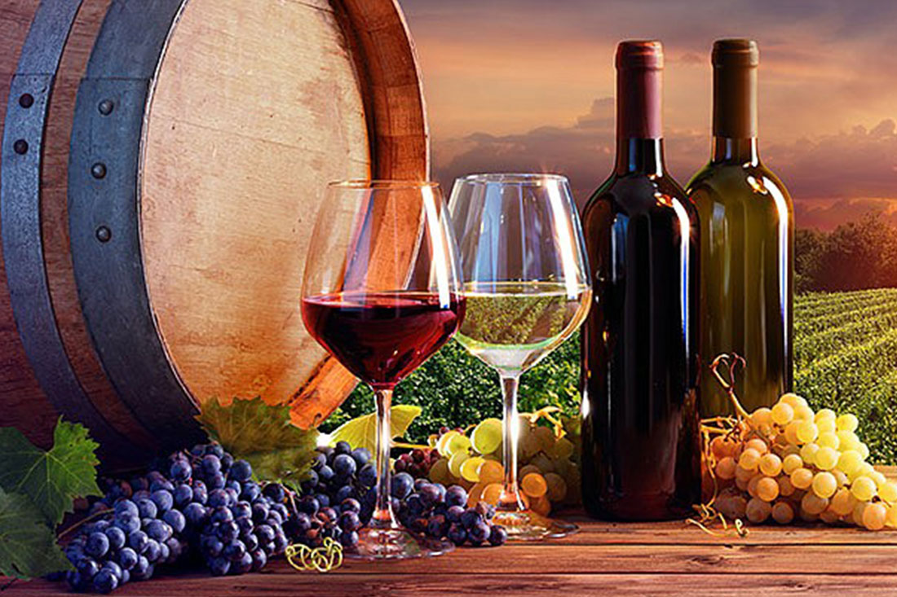
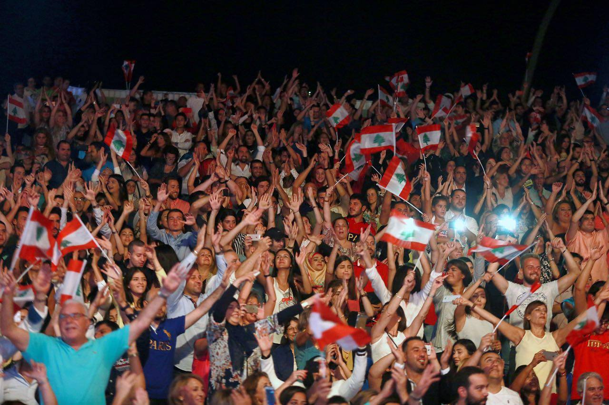
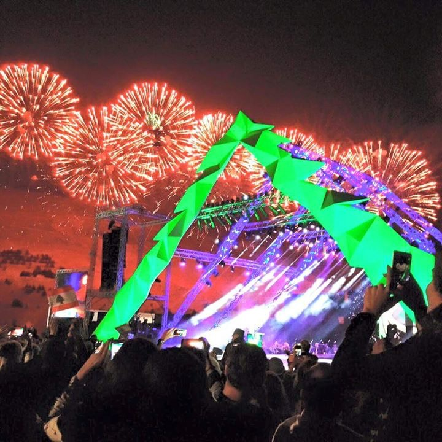
Festivals to Experience in Lebanon
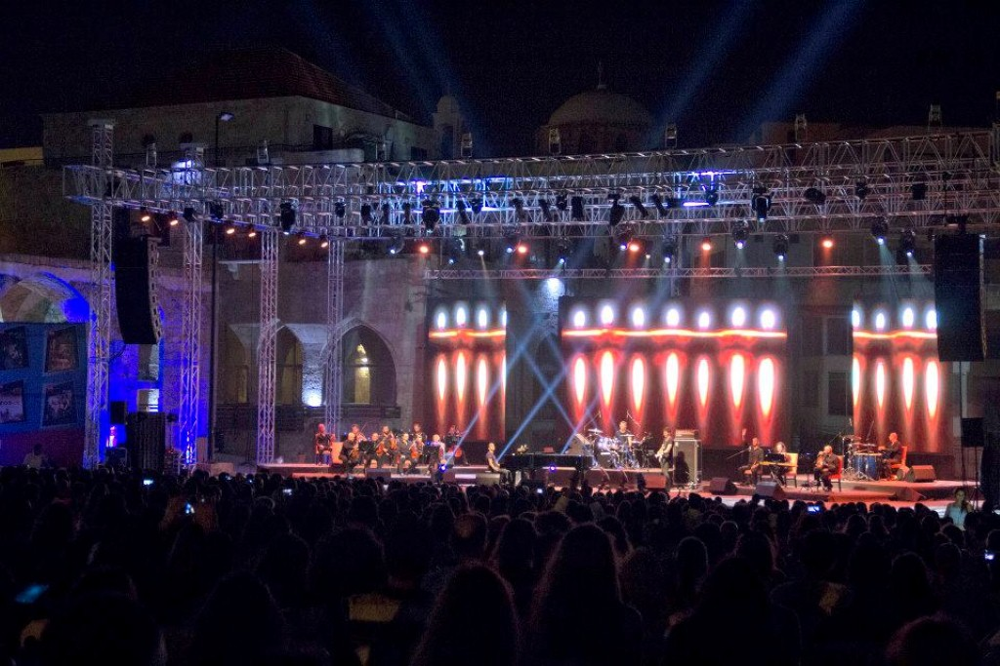
Batroun International Festival
Featuring concerts, art, and heritage events by the stunning Mediterranean coast.
FIND OUT MORE
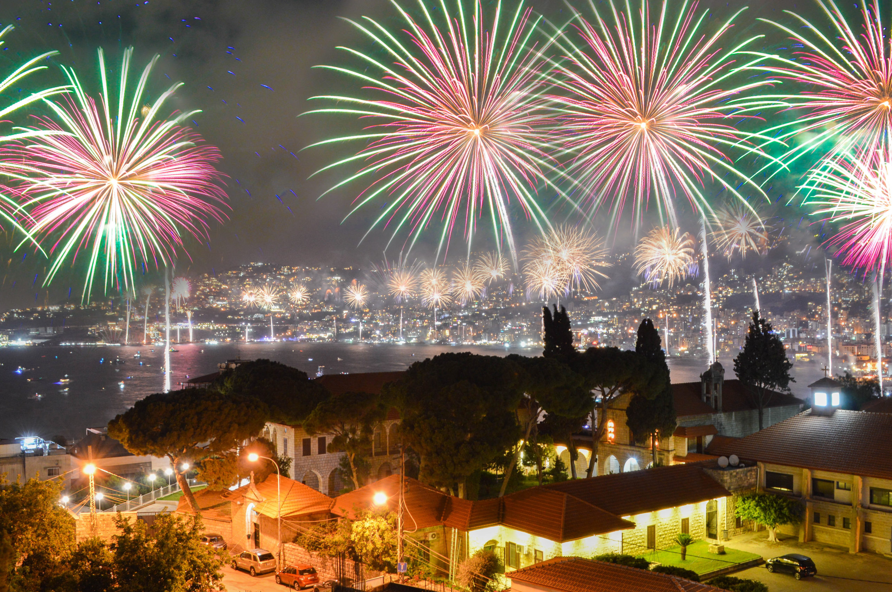
Jounieh International Festival
Famous for its fireworks and live performances, this festival is a coastal spectacle.
FIND OUT MORE
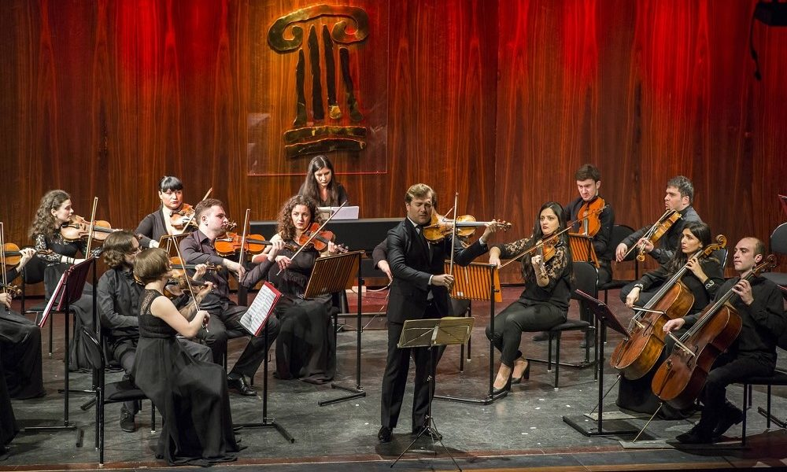
Al Bustan Festival
A classical music festival set in the mountains, showcasing local and international talent.
FIND OUT MORE
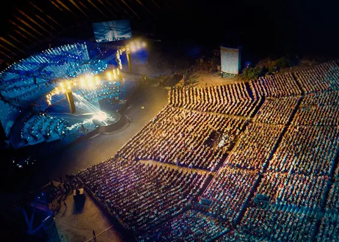
Tyre Festival
This festival celebrates the culture and heritage of Tyre with music and performances.
FIND OUT MORE
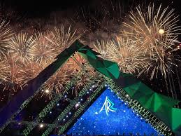
Shouf Cedars Festival
Held in the Shouf Biosphere Reserve, this festival honors Lebanon's natural beauty and heritage.
FIND OUT MORE
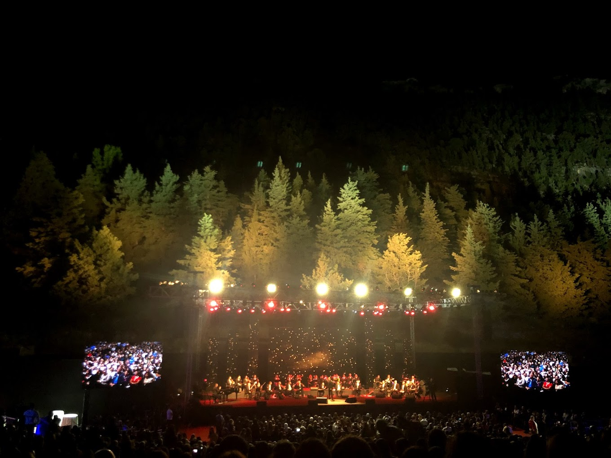
Ehdeniyat Festival
Enjoy cultural events, concerts, and theater in the scenic town of Ehden.
FIND OUT MORE
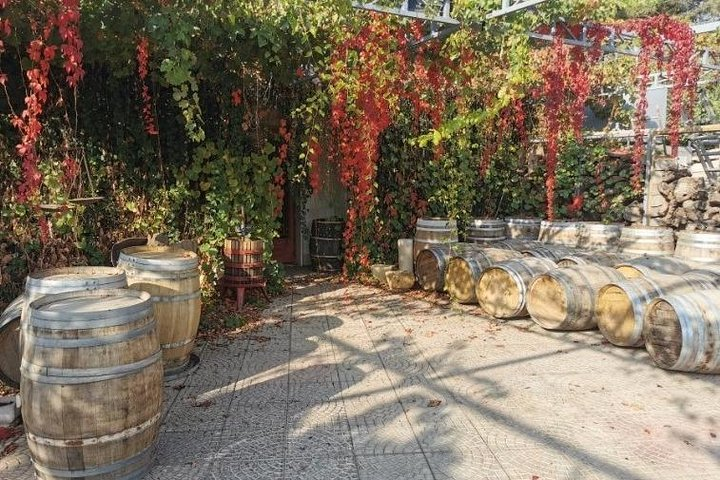
Zahle Wine Festival
A celebration of Zahle’s wine production heritage with tastings, music, and local delicacies.
FIND OUT MORE
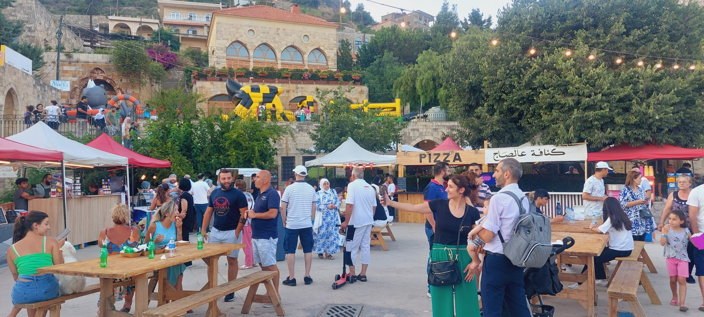
Deir el Qamar Festival
A traditional festival in a historic village, featuring folk music and authentic Lebanese cuisine.
FIND OUT MORE